Géographie et éducation à la citoyenneté
07 / 11 territoires
Le territoire industriel des Grands Lacs
Territoire région · Régionale · L'industrialisation et la reconversion
- aménagement
- commercialisation
- concentration
- délocalisation
- développement
- industrialisation
- mondialisation
- multinationale
- pays atelier
- ressource
- La région des Grands Lacs américains et canadiens
- L'aluminium québécois

Mise en contexte
Un territoire industriel s'organise autour d'entreprises de production, de distribution et de services. Il contribue au développement économique d'une région, et ses productions ont des effets sur l'environnement. Ce territoire s'inscrit dans un contexte économique mondial marqué par la délocalisation des industries, et il importe pour une région industrielle de conserver sa place dans ce contexte. Sur cette page, il sera question de la région des Grands Lacs canadiens et américains, puis de l'aluminium québécois, qui montre le même enjeu à une autre échelle.
Concepts à l'étude
- Aménagement : l'ensemble des interventions par lesquelles on organise un territoire. Ici, ce sont les ports, les canaux, les voies ferrées, les autoroutes et les parcs industriels.
- Commercialisation : le fait de transformer quelque chose en produit que l'on vend. Une usine ne fabrique pas pour elle-même, elle fabrique pour un marché.
- Concentration : un regroupement important d'éléments dans un même espace géographique. Autour des Grands Lacs, ce sont les usines, les habitants et les voies de transport qui se concentrent.
- Délocalisation : le transfert par une entreprise de ses activités, de ses capitaux et de ses emplois vers une région du monde qui lui offre un avantage concurrentiel.
- Développement : l'amélioration des conditions de vie d'une population, que l'activité économique rend possible mais ne garantit pas.
- Industrialisation : l'implantation progressive d'usines sur un territoire donné, et les transformations sociales qui l'accompagnent.
- Mondialisation : la libre circulation des marchandises, des capitaux, des services, des personnes, des techniques et de l'information à l'échelle de la planète.
- Multinationale : une entreprise qui contrôle des filiales dans plusieurs pays différents de celui où se trouve son siège social.
- Pays atelier : un pays qui accueille des usines de multinationales étrangères, surtout pour la main-d'oeuvre à bas salaire qu'il offre, et qui fabrique pour l'exportation plutôt que pour son marché intérieur.
- Ressource : ce qu'un territoire possède et que l'on peut mettre en valeur. Ici, ce sont le fer, le charbon, l'eau et la force de travail.
Qu'est-ce qui attire une industrie
Une industrie ne s'installe pas au hasard. Elle choisit une région plutôt qu'une autre en fonction de ce qu'on appelle les facteurs de localisation. Il y en a six, et une région devient un territoire industriel quand plusieurs d'entre eux se rencontrent au même endroit.
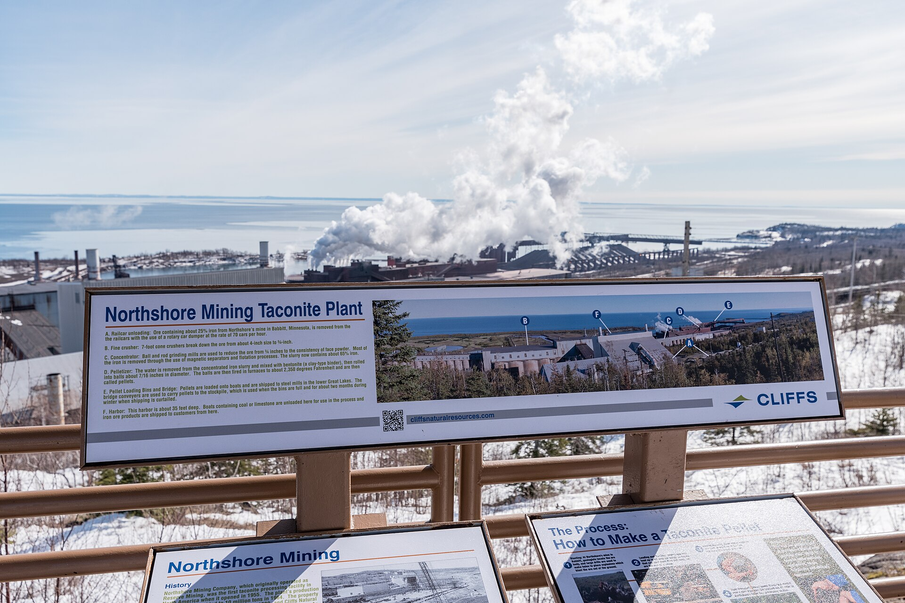
Source
Tony Webster from Minneapolis, Minnesota, United States, Cliffs Northshore Mining Taconite Plant Viewpoint, Silver Bay, Minnesota (39057179320), Wikimedia Commons. Licence : Creative Commons BY 2.0.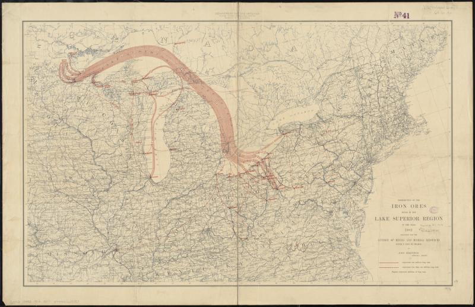
Source
http://maps.bpl.org, Distribution of the iron ores mined in the Lake Superior Region in year 1902 (8347361874), Wikimedia Commons. Licence : Creative Commons BY 2.0.Les trois secteurs d'activité
Les trois secteurs d'activité
Choisis un secteur
Toutes les activités économiques ne se ressemblent pas. On les range en trois secteurs, selon ce qu'elles font de la matière : l'extraire, la transformer ou rendre un service. Un territoire industriel se reconnaît à la place qu'y occupe le secteur secondaire.
La mondialisation et les multinationales
Les échanges commerciaux se sont globalisés : ils se produisent aujourd'hui entre toutes les régions de la planète. Il est possible de consommer un produit extrait, transformé et assemblé à l'autre bout du monde. Les multinationales utilisent les facteurs de localisation au maximum. Elles implantent leurs usines là où la main-d'oeuvre coûte le moins cher, là où les avantages fiscaux sont les plus généreux ou là où la ressource se trouve. C'est pourquoi beaucoup de produits vendus au Québec ont été fabriqués en Asie ou en Amérique du Sud, même quand l'entreprise qui les vend est américaine ou européenne.
Source : Alloprof
Un exemple : le vêtement
Le textile est l'exemple le plus net du pays atelier. Une chemise peut être cousue dans un pays où le salaire quotidien vaut le prix de son étiquette, puis vendue à l'autre bout du monde. La fast fashion, cette mode jetable qui se renouvelle en permanence, a fait exploser les quantités : les consommateurs achètent nettement plus de vêtements qu'il y a quinze ans. De la fabrication des matières premières au transport, en passant par le lavage et le recyclage, le cycle de vie d'un vêtement produit une pollution considérable.
Source : Joséfa Lopez et Elisa Bellanger, Le Monde
Le transport, angle mort de la mondialisation
Plus les usines s'éloignent des consommateurs, plus les marchandises voyagent. Or le transport maritime fonctionne au fioul lourd, l'un des carburants les plus sales qui soient : un résidu visqueux qui reste une fois raffinés l'essence, le naphta et le diesel. Seul l'asphalte des routes est plus épais. Une chemise bon marché coûte donc plus cher que son prix, mais la différence n'apparaît sur aucune étiquette.
Situer les Grands Lacs
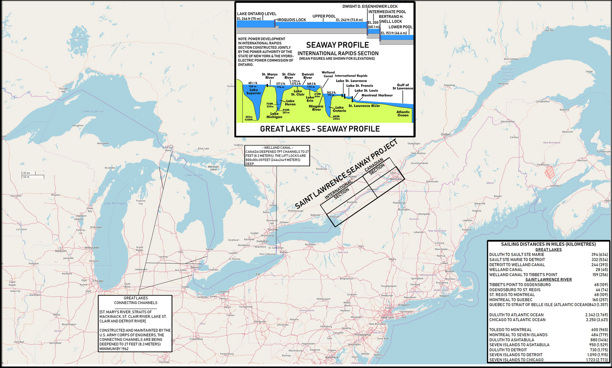
Source
Cobatfor, Great Lakes and St. Lawrence Seaway map 1959, Wikimedia Commons. Licence : Creative Commons BY-SA 3.0.Les Grands Lacs forment le plus important réseau de lacs du Canada. Situés au sud-est du pays, ils s'étendent aussi aux États-Unis et sont traversés par la frontière internationale. Avec un volume total de 22 810 kilomètres cubes, ils emmagasinent une part considérable de l'eau douce de surface de la planète, souvent estimée à un cinquième. La région compte en plus une multitude de lacs plus petits, de cours d'eau et quelque 35 000 îles.
Le lac Supérieur est le plus grand des cinq, avec 83 300 kilomètres carrés, ce qui en fait le deuxième lac de la planète après la mer Caspienne. Le lac Huron suit avec 59 800 kilomètres carrés, puis le lac Michigan, le seul à se trouver entièrement en territoire américain. Le lac Érié et le lac Ontario ferment la marche.
Une concentration humaine sans équivalent
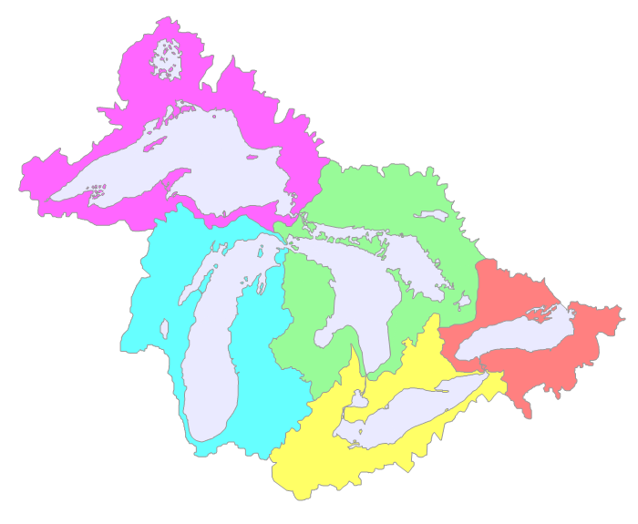
Source
Drdpw, Sub-basins Great Lakes Basin, Wikimedia Commons. Licence : Creative Commons BY-SA 3.0.Environ 8,5 millions de Canadiens vivent dans le bassin des Grands Lacs, notamment à Toronto, Kingston, Sarnia, Hamilton et Thunder Bay, et 30,7 millions d'Américains dans sa partie sud, à Milwaukee, Chicago, Détroit, Cleveland et Buffalo. Cela fait environ 40 millions de personnes, soit un peu plus du quart de la population canadienne et un peu plus du dixième de la population américaine. C'est la région la plus densément peuplée d'Amérique du Nord.
Source : Alloprof
Pourquoi les industries ont choisi cette région
La géographie et la voie maritime
Le réseau Grands Lacs et Voie maritime du Saint-Laurent est une voie navigable profonde qui s'étend sur 3 700 kilomètres entre l'océan Atlantique et la tête des Grands Lacs, au coeur du continent. La portion appelée Voie maritime du Saint-Laurent va de Montréal au milieu du lac Érié. Considérée comme l'une des grandes réalisations techniques du 20e siècle, elle compte treize écluses canadiennes et deux écluses américaines.
Des navires venus du monde entier peuvent ainsi pénétrer au centre de l'Amérique du Nord. Deux ouvrages rendent la chose possible : le canal Welland, qui contourne les chutes du Niagara entre le lac Ontario et le lac Érié, et les écluses de Sault-Sainte-Marie, entre le lac Huron et le lac Supérieur.
Source : Corporation de gestion de la Voie maritime du Saint-Laurent
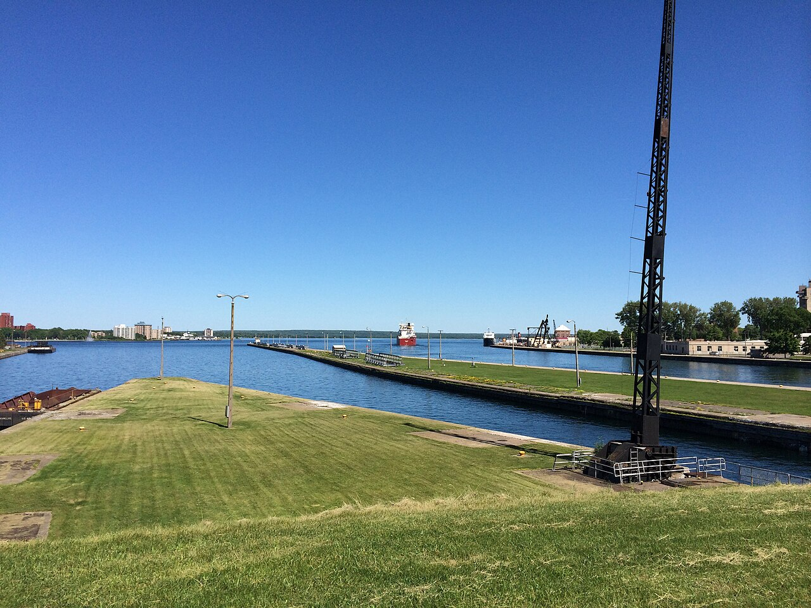
Source
NOAA Great Lakes Environmental Research Laboratory, Freighter approaching the Soo Locks (14659035049), Wikimedia Commons. Licence : Creative Commons BY-SA 2.0.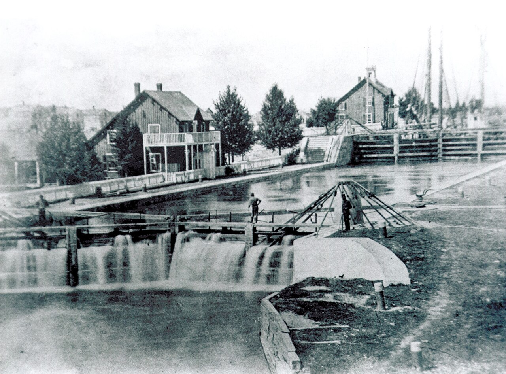
Source
U.S. Army Corps of Engineers, photographer not specified or unknown, Soo Locks 19th Century, Wikimedia Commons. Licence : Domaine public.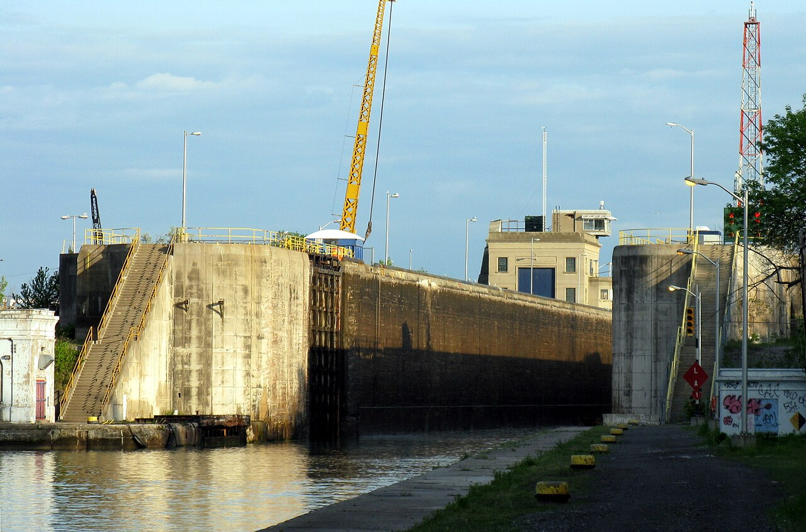
Source
Balcer, Welland Canal Lock 1 Port Weller, Wikimedia Commons. Licence : Creative Commons BY-SA 3.0.La main-d'oeuvre
Quarante millions d'habitants, cela fournit aux industries une main-d'oeuvre nombreuse. Les nombreuses universités de la région, des deux côtés de la frontière, la rendent aussi qualifiée. Une entreprise qui s'installe ici trouve à la fois des ouvriers spécialisés et les écoles pour en former d'autres.
Les infrastructures
Ports, chemins de fer, autoroutes et aéroports se sont accumulés depuis un siècle et demi. Le port de Hamilton, sur le lac Ontario, est le grand port industriel canadien de la région, celui par lequel transitent le minerai de fer et l'acier. Toronto, Chicago, Cleveland et Duluth ont chacun leurs installations portuaires.
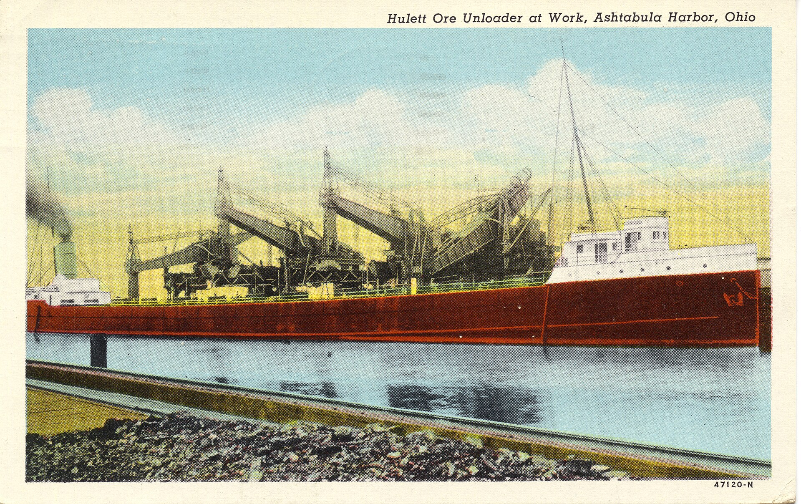
Source
Miami U. Libraries - Digital Collections, Hulett Ore Unloader at Work (14090804785), Wikimedia Commons. Licence : No restrictions.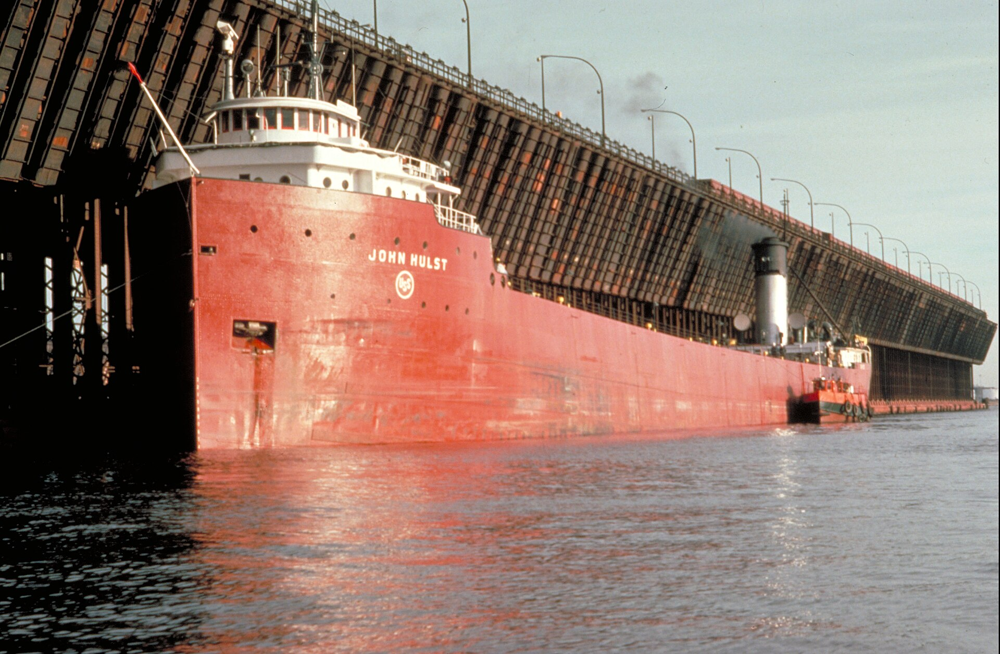
Source
Unknown author Unknown author, USEPA GL collection 136 LakerAtDuluthOreDock, Wikimedia Commons. Licence : Domaine public.L'aide gouvernementale
Les trois paliers de gouvernement aident les entreprises à s'installer : subventions, allègements fiscaux, accords de libre-échange qui facilitent l'importation et l'exportation, formations adaptées à la demande des industries. En contrepartie, les entreprises paient les impôts canadiens ou américains et doivent respecter les normes environnementales des deux pays. Cette dernière exigence n'est pas un détail, dans une région qui détient une telle réserve d'eau douce.
L'automobile, moteur et fragilité
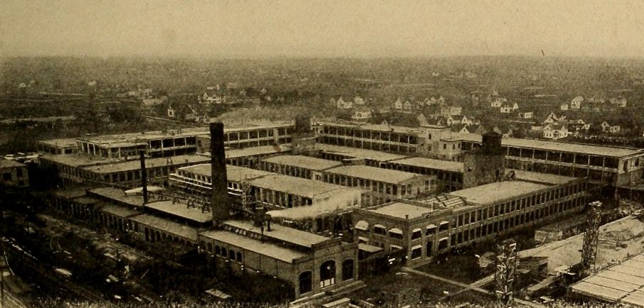
Source
The Outing Publishing Company, Packard factory plant circa 1904, Wikimedia Commons. Licence : Domaine public.L'industrie qui a le plus profité du développement de la région est l'automobile. C'est autour du lac Michigan et du détroit de Détroit que les grands constructeurs américains se sont installés : Ford, General Motors et Chrysler, qu'on a appelés les Big Three. Les mines de fer des environs expliquent ce choix, tout comme la navigation qui amenait le minerai à bas prix.
Ce que pèse vraiment l'automobile
L'ensemble de la filière automobile représente environ 1 000 milliards de dollars par année pour l'économie américaine, soit près de 5 % du produit intérieur brut, et emploie directement près de 10 millions de personnes. Les trois constructeurs historiques comptent à eux seuls pour environ 3 % du produit intérieur brut, et exploitent 60 % des usines d'assemblage du pays.
Source : Alliance pour l'innovation automobile
Le déclin, puis les tarifs
À partir des années 1970, les voitures japonaises, plus petites et moins gourmandes en essence, prennent des parts de marché. Les coûts de production des Big Three deviennent trop élevés pour suivre. Des usines ferment, d'autres se déplacent. Mais la première délocalisation n'a pas traversé l'océan : elle est descendue vers le sud des États-Unis. Les constructeurs japonais, coréens et allemands ont bâti leurs usines américaines dans le sud-est, où les salaires sont plus bas et la syndicalisation plus faible. Cette production du sud-est représente environ 15 % du total national.
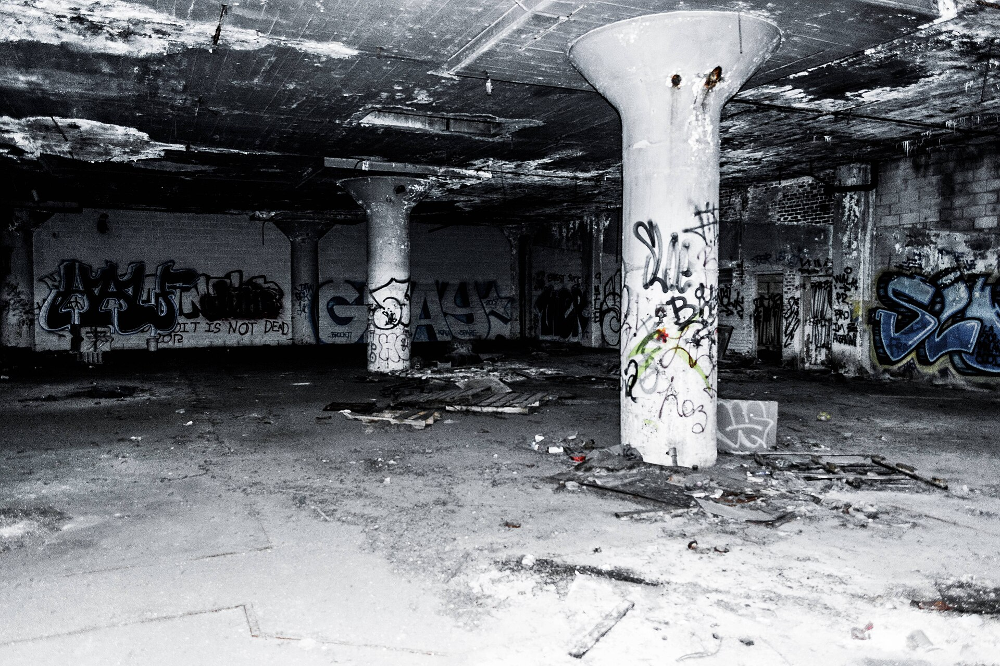
Source
Alecothegecko, Abandoned Packard Plant in Detroit, Michigan, Wikimedia Commons. Licence : Creative Commons BY-SA 4.0.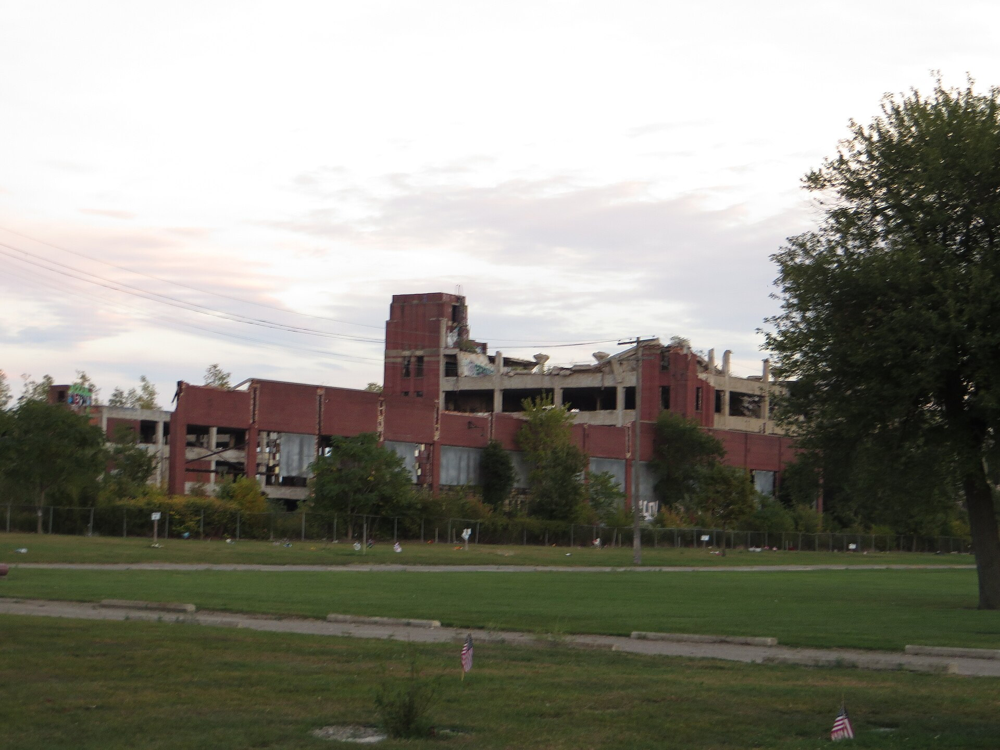
Source
Ken Lund from Reno, Nevada, USA, Dilapidated Packard Plant, Detroit, Michigan (21559267280), Wikimedia Commons. Licence : Creative Commons BY-SA 2.0.Le territoire d'hier et celui d'aujourd'hui
Les Grands Lacs, avant et maintenant
Choisis un critère
Comparer la région à son âge d'or industriel et à aujourd'hui permet de voir ce qui a changé, mais aussi ce qui n'a pas changé. Parcours les six critères avant de répondre.
Les enjeux environnementaux
Les industries de la région sont polluantes, et elles se trouvent au bord de la plus grande réserve d'eau douce de surface du continent. C'est la contradiction centrale de ce territoire. Le lac Érié est le plus touché : peu profond, entouré de terres agricoles, il reçoit les engrais qui nourrissent chaque été des algues bleues toxiques. Dans les années 1960 et 1970, on le disait mort. Les rejets industriels ont depuis beaucoup diminué, mais la pollution a changé de source : elle vient maintenant des champs et des microplastiques, et non plus seulement des tuyaux d'usine.
Une région industrielle du Québec : l'aluminium
Le Québec possède son propre territoire industriel, plus petit mais bâti sur la même logique. Huit des neuf alumineries canadiennes s'y trouvent, exploitées par trois multinationales : Rio Tinto, Alcoa et Alouette. Elles emploient plus de 7 700 personnes au Québec, dans des régions éloignées des grands centres : le Saguenay-Lac-Saint-Jean, la Côte-Nord et le Centre-du-Québec.
Le facteur de localisation décisif est ici l'électricité. Fondre l'aluminium demande d'énormes quantités de courant, et c'est l'hydroélectricité bon marché qui a fait venir ces usines. Le premier lingot d'aluminium canadien a été coulé à Shawinigan en 1901, à côté d'une centrale. L'aluminerie Alouette, à Sept-Îles, n'a été rendue possible que par la production d'électricité de Churchill Falls.
Une industrie tournée vers un seul client
Le secteur québécois de l'aluminium envoie environ 96 % de ses exportations étrangères aux États-Unis. C'est une dépendance extrême, et les tarifs de 50 % imposés en 2025 l'ont mise à l'épreuve. La réaction est instructive. Plutôt que de réduire la production, l'industrie a redirigé une partie du métal vers l'Europe : les expéditions y sont passées de 99 907 tonnes en 2024 à 505 430 tonnes en 2025, soit cinq fois plus. Les exportations métallurgiques québécoises ont tout de même chuté de 36 % en volume entre février 2025 et février 2026, mais les alumineries ont continué de tourner à 95 % de leur capacité, sans mise à pied.
Source : Association de l'aluminium du Canada et Institut du Québec